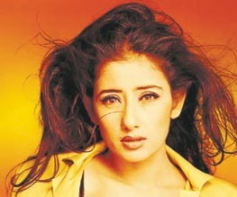

Manisha Koirala reinvents herself
Striving to reinvent herself as a serious artiste, Manisha Koirala must see that the transformation is anything but seamless. Her miscalculations on the path to stardom are legendary, almost as legendary as her ethereal beauty and screen presence. Dogged by scandals and rumors during her hey days, this talented and underrated actor saw her career stall and start many a time.
The Nepali beauty is controversy’s child, her name has been linked romantically to Vivek Mushran, Nana Patekar and DJ Whosane, the Aussie ambassador to Nepal, Crispin Conroy and her bohemian ways were fodder for innumerable gossip columns.
Since her screen debut in the late ’80s, Manisha has been among Bollywood’s top draws. Though not always taken seriously as a dramatic actress, her onscreen charisma has guaranteed her an enviable choice of roles, be they in drama or tragedy. Like Madhubala before her, Koirala possesses a beauty that has translated into widespread audience appeal.
A glance at her track record shows that despite a few forgettable films, Manisha has delivered the goods in many hits, among them, Vidhu Vinod Chopra’s 1942, A Love Story, Mansoor Khan’s Akele Hum Akele Tum or Sanjay Leela Bhansali’s Khamoshi, Mani Rathnam’s Bombay and Dil Se, Raj Kumar Santhoshi’s Lajja, and Ram Gopal Varma’s Company.
She has surely carved herself a niche in Bollywood. She walked away with the Filmfare Critics award for both Khamoshi and Bombay. The commercial hits, Agnisakshi, Hindustani and Gupt, strengthened her foothold among the top stars.
She was in the spotlight recently, embroiled in a bitter battle of wits against the director Shashilal Nair of her latest releaseEk Chotti Si Love Story. In the film, a body double was used to shoot nude scenes of Manisha, apparently without her consent. The film deals with the obsession of a voyeuristic young man and Manisha plays the object of his desire. There was much written about Manisha, Shashilal Nair and the woman who doubled for Manisha. The case made its way to court with hints that the Shiv Sena Supremo, Mr. Bal Thackeray and his main associates were contacted to mediate between the parties. The controversy could not have served the film better, as it is doing brisk business in various regions in India and is being dubbed in many regional languages.
Manisha was also in the news for the Sawaal Dus Crore Ka fiasco, which put her in the role of a TV show host, opposite Amitabh Bachhan’s Kaun Banega Crorepati. The show was a disaster from the word go and was quickly cancelled, with Manisha taking the heat for its failure. She redeemed her reputation some when she was instrumental in mellowing down the anti-Hrithik Roshan wave in Nepal.
Koirala was in the Boston recently to promote her latest release Escape from Taliban, which is based on Sushmita Bandhopadhyaya’s heart-rending accounts of life under Taliban in her autobiographical novels Kabuliwalar Bengali Bau and Afghan O’ Ami.
It traces the true story of a Bengali woman Bandhopadhyaya, who, blinded by love weds her Afghani lover, leaves her hometown Kolkata and follows him to Sarana, a small town about 18 hours from Kabul. In the face of hatred and disrespect toward women in the country where she was forced to covert to Islam, Bandhopadhyaya rebels. The film deals with her struggle and tells vividly the story of her escape from Afghanistan and her journey back to India after six years in the country from the restrictive Taliban regime. National award winner, Bengali filmmaker, Ujjal Chattopadhayaya directs this autobiographical account. Escape From Taliban has an international star cast, including actor Nawab Khan from Kandahar, Afghanistan, and Iranian actress Feroze.
Koirala showed up for an exclusive interview with Little India in a black turtleneck and sweater and a black skirt, her face radiant, her complexion flawless. Flashing her famous smile, she skirted uncomfortable questions, carefully answering only safe ones. Her mother sat in on the interview, providing some answers, sometimes cuing Manisha on tricky ones. It is quite obvious that the two are very close.

How do you like Boston so far?
I love Boston, it is so pretty and intellectual. I have great respect for this city because it is home to so many good learning institutions. I have not seen much of it yet, but what I have seen has charmed me.
After your early films the Nepali film Pheri Dhidora and Hindi Saudaga, you have worked with some of the best directors in India. Mani Rathnam, Ram Gopal Varma to name a few.
Which director has challenged you the most, as an actress? Has been most demanding?
I acted in the Nepali film when I was very young. I always loved acting and was thrilled to get into Hindi films. Hmmm, about directors, it is hard to say. All the directors are very demanding and challenging, they were also easy to work with, because they knew what they were doing! Each one has his own style. Mani Rathnam is gentle and intuitive. He brings out the best in his actors by trusting their instincts as well as his own. Ram Gopal Varma is a very talented director, very demanding too, he will surely be a big name soon. Vinod, I would say is the most demanding director I have had. He would push me and push me, I am thankful to him though for bringing out the best in me. I remember practicing some lines over and over, one night till 4 a.m., all to please Vinod and my mom said, “Enough is enough, Manisha.”
What kind of roles do you prefer? Edgy ones, or the simple kind?
I have reached a point in my career when the script, the role is most important. Earlier I would be interested in who the hero was (laughs), how much I was paid and all, but now I really would like to do good cinema. Also I have done many song and dance roles, maybe more will come my way.
You have undertaken a wide and diverse set of roles, from Khamoshi, to Bombay, Dil Se, 1942, Love story to Company, Lajja, Moksha and now Escape from Taliban. Do you feel that you have been lucky as actor to have accomplished so much?
I have to achieve so much more. Yes I consider myself very lucky to have had an opportunity to play such a diverse set of characters. I am open to only the best reel offers, my interest now is to play meaningful roles in good cinema.
What about Shashilal Nair’s controversial Ek Choti si love story? Where do you stand on that? What is the latest development on that front?
We hear that it is doing brisk business in India.
(Laughs out loud). Please don’t ask me to talk about that! No comments.
Would you call that meaningful cinema?
I can’t comment on that either.
What have been roles close to your heart?
Again there have been many. I loved my role in Lajja, Dil Se, Company, Escape, etc. I try to give every role a lot of importance, so almost all of them are dear to me. Lajja , in particular is very dear to me. When I read the script, I knew that was the character I wanted to play. Women’s issues interest me tremendously.
What do you think about the present crop of actors?
I am very impressed with this crop, they are hard working, dedicated and determined to make it big in the industry. They are also so competent. I wish them all success.
Chitra: How is it different working in the South Indian film industry compared to working in Bombay and Bollywood?
In the South, it is so much more disciplined — everything is done on schedule, very rigid and straightforward. In Bombay, we are more laid back and let things take their course.
Are you acting in any Nepali Films now?
I would love to! The film industry is growing and there are some good people here.
A personal question. In Hollywood, an actor’s reputation or notoriety is not as important as it is in Bollywood. Knowing that you have been dogged by controversies and rumors, how do you feel about it?
(Laughs for a while) Bollywood, Hollywood, I think it’s all the same. I lived life the way I wanted to. There will always be rumors. I don’t think the public wants heroines to be the Sati Savithri types, look at Tanujaji, Sharmila Tagore, they were fiercely independent minded, they lived life well. The 80s in Bollywood (shudders) were terrible, thank god for the 90s! Being public figures, we have to take our share of flak from the press and public. I do not mean irresponsible journalism, though. I am not opposed to exclusives about me, but the press should write what is true, write correct breaking news.
So, who is the man in your life now?
(Laughs) No comments.
You injured yourself recently when you hurt your foot in fall from horse back, how did that happen?
While shooting. I got better though with a lot of rest, I watched a lot of movies and got to relax.
Could you tell us about the social causes you support?
Right now I am involved in social causes like population control. I am an ambassador for the United Nations. I am also working to rehabilitate child prostitutes from Nepal and India. I am working with many social workers in Nepal and will continue to champion the cause of these unfortunate women. I always wanted to do some social work, some charity work, with the right channels. The UN is a committed organization that works for the well being of people on the whole. Besides that, I also want to get into some serious theatre and film production.